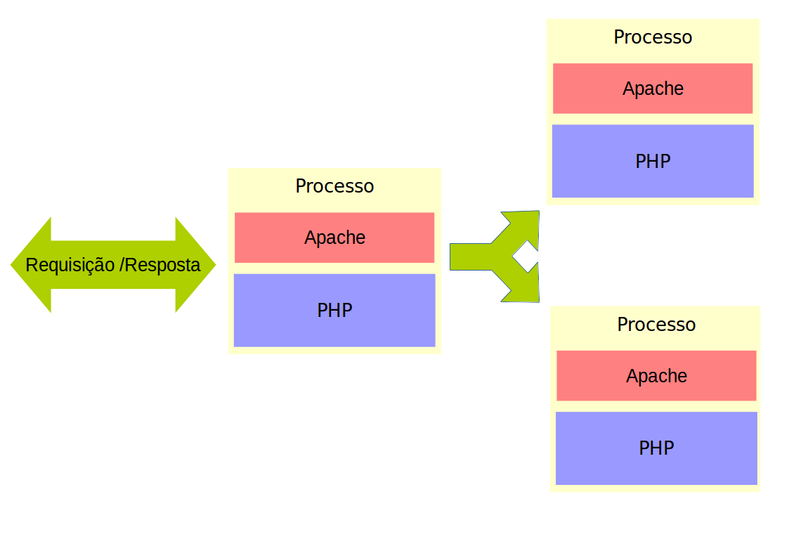
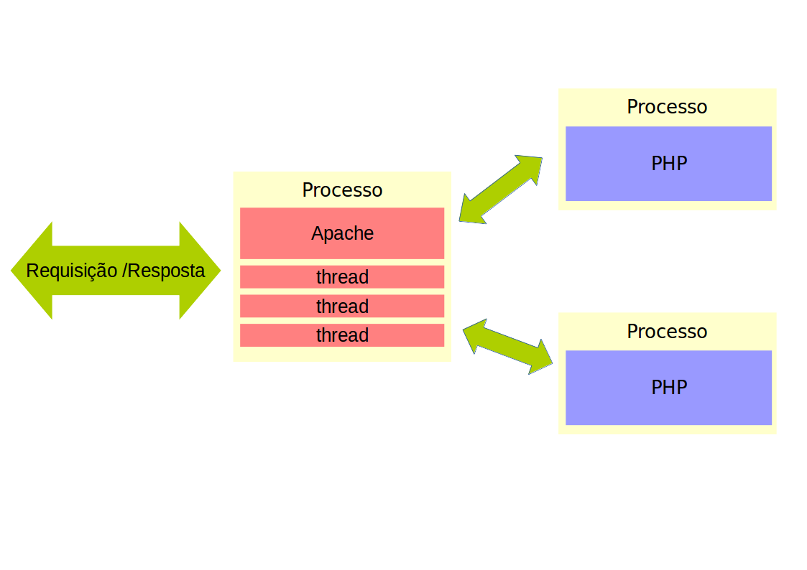
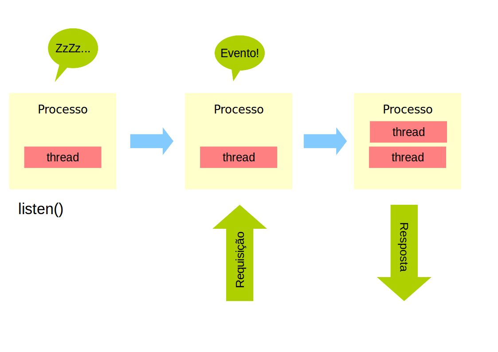

Node.js 101
Entendendo o Hype
Ivan Quirino
- Lead Developer Yupi Studios
- Cursando pós em Engenharia de Software - Estácio
- Tecnólogo em Redes de Computadores - IFPB
Yupi Studios
Aplicativos, jogos e soluções inovadoras para as principais plataformas no mercado móvel: iOS, Android e Windows Phone/Windows8
O que é Node.js?
Javascript
Assíncrono
I/O sem bloqueio
Escalável
Baixo nível
Única Thread
Plataforma para construir aplicações de rede rápidas e escaláveis de maneira fácil
APIs do Node.js
HTTP e HTTPS
TCP e UDP
Sistema de Arquivos
Cluster
Processos
Por que tanta pressa?
Google Chrome V8
- Compilação JIT para código de máquina
libuv
- Entrada / Saída assíncrona
O problema C10K
Como conseguir 10k conexões simulâneas?
Os modelos clássicos de concorrência não atingem a escala Web
Apache + módulo PHP: fork()
Apache + FCGI: pthread_create()
Eventos!
O sistemas operacionais implementaram sistemas de notificação de entrada e saída
- Linux: epoll
- Windows: IOCP
- FreeBSD: kqueue
- POSIX: select
Abstração: libuv
Eventos!
Exemplo
var http = require('http');
http.createServer(function (req, res) {
res.writeHead(200, {'Content-Type': 'text/plain'});
res.end('Hello World\n');
}).listen(1337, '127.0.0.1');
console.log('Server running at http://127.0.0.1:1337/');
Módulos
- NPM
- Express.js, Sails.js etc
- forms
- LESS, Sass, Stylus
- Jade, Handlebars, ejs, hogan.js etc
- Socket.io, request etc
- MySQL, PostgreSQL, MongoDB, Redis, Apache Cassandra etc.
- Squel e Sequelize
- e muito mais!
Vantagens e desvantagens
- Produtivo usar Javascript no lado do servidor
- Muitas ferramentas
- Controle total sobre seu servidor
- Frameworks não tão completos como em outras linguagens
- Documentação insuficiente de alguns módulos
- Poucas hospedagens dão suporte (Nodejitsu, Heroku etc)
Eventos em outras linguagens
- PHP: React
- Python: Twisted
- Ruby: EventMachine
- Java: Netty
- D: Vibe.d